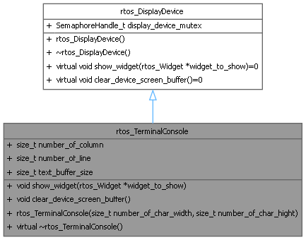

rtos_TerminalConsole Class Reference
The RTOS terminal console is the class for all text display devices that are managed by a dedicated display task in an RTOS environment. More...
#include <display_device.h>
Inheritance diagram for rtos_TerminalConsole:

Collaboration diagram for rtos_TerminalConsole:

Public Member Functions | |
| void | show_widget (rtos_Widget *widget_to_show) |
| Construct a new rtos_TerminalConsole object. | |
| void | clear_device_screen_buffer () |
| Clear the device screen buffer. | |
| rtos_TerminalConsole (size_t number_of_char_width, size_t number_of_char_hight) | |
| Construct a new rtos_TerminalConsole object. | |
Public Attributes | |
| size_t | number_of_column |
| the size, in number of character of a line | |
| size_t | number_of_line |
| the number of line | |
| size_t | text_buffer_size |
| the number of characters | |
| Public Attributes inherited from rtos_DisplayDevice | |
| SemaphoreHandle_t | display_device_mutex |
| the mutex to protect the display device access | |
Detailed Description
The RTOS terminal console is the class for all text display devices that are managed by a dedicated display task in an RTOS environment.
Constructor & Destructor Documentation
◆ rtos_TerminalConsole()
| rtos_TerminalConsole::rtos_TerminalConsole | ( | size_t | number_of_char_width, |
| size_t | number_of_char_hight ) |
Construct a new rtos_TerminalConsole object.
- Parameters
-
number_of_char_width the size, in number of character of a line number_of_char_hight the number of line
Member Function Documentation
◆ clear_device_screen_buffer()
|
virtual |
Clear the device screen buffer.
Implements rtos_DisplayDevice.
◆ show_widget()
|
virtual |
Construct a new rtos_TerminalConsole object.
- Parameters
-
widget_to_show the widget to show
Implements rtos_DisplayDevice.
The documentation for this class was generated from the following files:
- display_device.h
- display_device.cpp